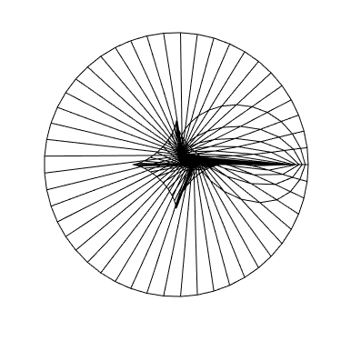

Grid Generation for Finite Difference Methods

An important technique for finite-difference methods (FDM) requires grid generation to create a structured mesh. Whereas finite element methods (FEM) and boundary element methods (BEM) commonly employ unstructured meshes, finite-difference methods require an underlying grid to numerically estimate derivatives. Previously, FDM have been restricted to grids based on known coordinate systems, e.g., cartesian or polar coordinates, leading to well-known 'staircase' type grids at irregular boundaries. However, using curvilinear coordinates, one can generate conformal grids to apply the FDM to arbitrarily shaped domains.